How everything works
Eight implementation diagrams for the team: from a student's search to validated agent outputs, source review, application planning and evaluation evidence.
Works offline. Keep this file and its SVG files together. Use your browser's Print → Save as PDF to export a presentation handout.
1. Student journey


2. System and data boundaries


3. Matching graph and agent handoffs


4. Eligibility, cycle handling and relevance


5. Source provenance and review


6. Model contract, spending controls and fallback


7. Planning and local persistence


8. Evaluation and course evidence

